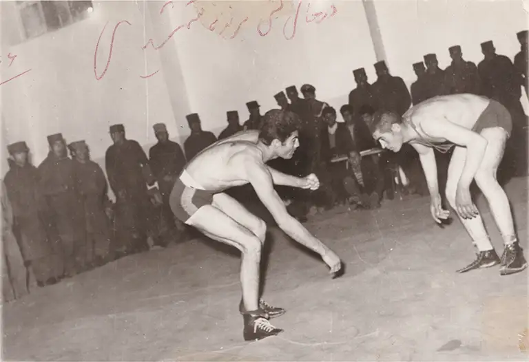
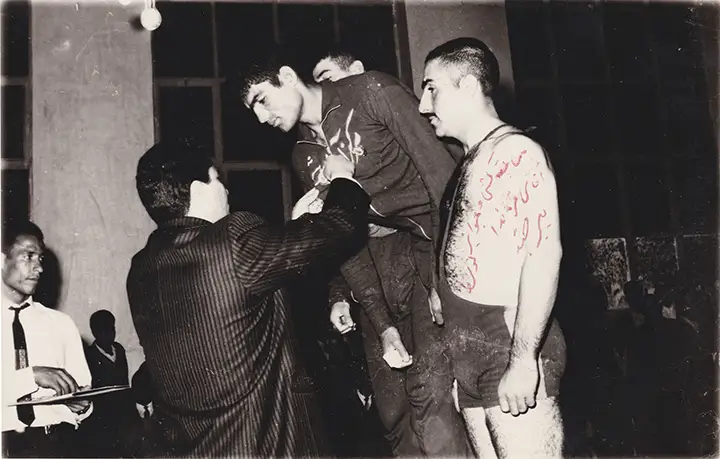
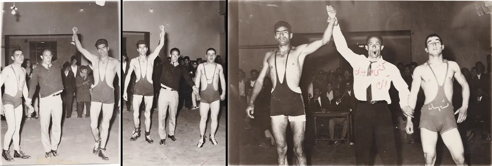
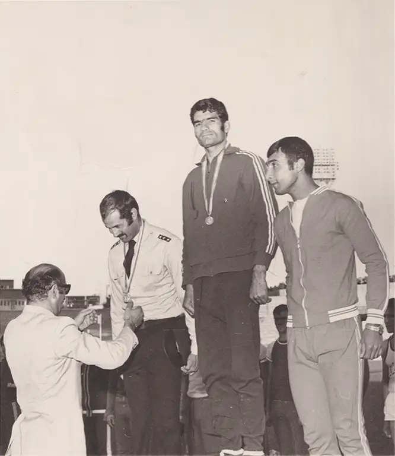

منوچهر شمشیری پیش از ورود به دنیای دو و میدانی، چندین سال در رشته کشتی فعالیت داشت و در مسابقات استانی شرکت میکرد. کشتی بخش مهمی از سالهای ابتدایی فعالیت ورزشی او بود و فرصتی برای کسب تجربه در رقابتهای ورزشی فراهم کرد.
تمرینات کشتی به او کمک کرد تا با آمادگی جسمانی، نظم تمرینی و فضای رقابت آشنا شود. تجربههایی که در این دوران به دست آورد، بخشی از مسیر ورزشی او را شکل داد.
با این حال، اتفاقی در یکی از مسابقات کشتی باعث شد مسیر ورزشی او به سمت رشته دیگری تغییر کند؛ رشتهای که بعدها به عرصه اصلی فعالیت او تبدیل شد.

در دهه ۴۰ شمسی، یک مسابقه کشتی استانی همه چیز را تغییر داد
در یکی از مسابقات کشتی استانی در دهه ۱۳۴۰، منوچهر شمشیری با اتفاقی روبرو شد که مسیر فعالیت ورزشی او را تغییر داد. بنا بر روایتهای موجود، نتیجه مسابقه آنطور که انتظار داشت پیش نرفت و این تجربه زمینهساز تصمیمی تازه شد.
پس از این اتفاق، مربی کشتی او پیشنهاد کرد در مسابقه دوی ۱۰۰ متر شرکت کند؛ چرا که شهر برای این رقابت به دونده نیاز داشت. شمشیری که تا آن زمان به طور جدی در رشته دو و میدانی فعالیت نکرده بود، این پیشنهاد را پذیرفت.
او با لباس و کفش کشتی وارد پیست شد تا در کنار دوندگانی که تجربه بیشتری در این رشته داشتند، مسابقه دهد.
یک ورود اتفاقی که استعدادی پنهان را آشکار کرد.
منوچهر شمشیری در نخستین تجربه خود در دوی ۱۰۰ متر، موفق شد مقام اول را کسب کند. این نتیجه، با توجه به اینکه پیش از آن در رشته کشتی فعالیت داشت و تجربه چندانی در دو و میدانی نداشت، اتفاق مهمی در مسیر ورزشی او بود.
پس از این مسابقه، مسیر تازهای پیش روی او قرار گرفت. شمشیری فعالیت خود را در دو و میدانی جدیتر دنبال کرد و به تدریج تمرکز اصلیاش را از کشتی به دویدن تغییر داد.
این تصمیم آغاز دورهای تازه در زندگی ورزشی او بود؛ دورهای که بعدها او را به رقابتهایی مانند مسابقات قهرمانی آسیا و مسابقات جهانی نظامیان رساند.

نگاهی به سالهای کشتی منوچهر شمشیری
تصاویری از سالهای ابتدایی فعالیت ورزشی منوچهر شمشیری در رشته کشتی؛ از حضور در مسابقات استانی تا روزهای تمرین و رقابت. این عکسها بخشی از خاطرات ورزشی او را پیش از ورود جدی به دنیای دو و میدانی به نمایش میگذارند.

